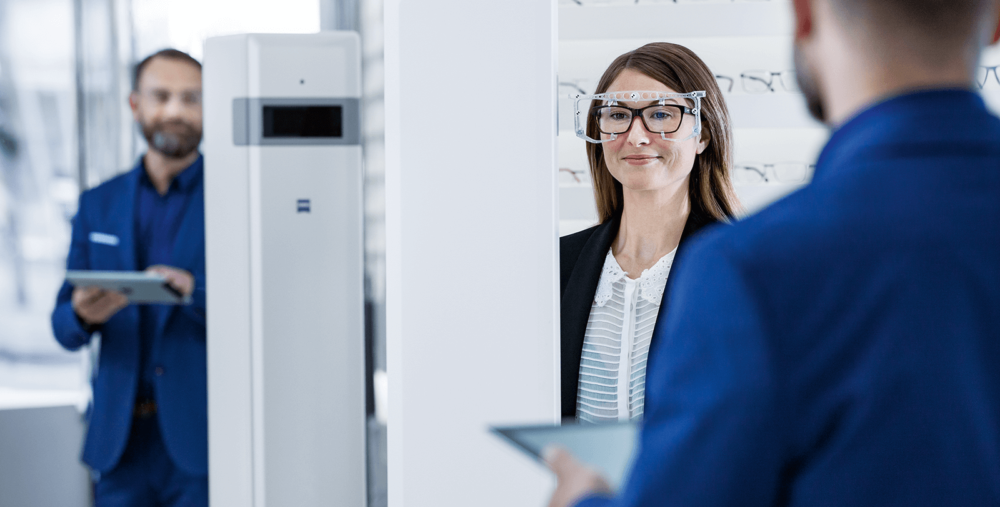

Digital Lenses –
the perfect all-day glasses for
the digital lifestyle.
Focused on modern life. ZEISS Digital Lenses will provide you with a totally new view of your smartphone, tablet or TV. Perfectly matched to the use of digital devices. Your eyes will thank you for it.

ZEISS Digital Lenses.
The remedy to Digital Eyestrain.
On average, we look at our smartphones, tablets or TV screens for almost five hours every day. And we glance at our mobile phones as many as 80 times a day! And these figures are set to rise in the future. Small font sizes and the constant switching of our viewing focus from near to far objects demands the utmost from our eyes. From the age of 30 onwards, this can lead to digital eyestrain or, as the experts put it, the Computer Vision Syndrome. ZEISS Digital Lenses offer the perfect remedy by enabling fast, comfortable focusing thanks a specially optimised near zone – no matter where we look. These lenses are ideal not only for digital devices, but also for reading books and magazines.
Optician Search
Find a Zeiss Optician near you
The world in pixels – a challenge for our eyes.
The increasing use of smartphones, navigation devices, e-readers and tablets is also changing our visual behaviour: our eyes are having to become accustomed to a new range of near vision to accommodate the shorter distance at which we hold digital devices compared to a newspaper or a book. And they also require our eyes to constantly switch between different distances. This is a situation that demands a lot – often too much – from our eyes: more and more people are becoming shortsighted or are complaining about problems with their eyes or general health as a result.
What is Digital Eyestrain?
The use of digital technology demands the utmost from our eyes. In just a fraction of a second they have to move between far and near: from viewing something in the distance to small displays, tiny fonts and tightly packed information –and then back again. This places extreme strain on the ciliary muscle and the lens of the eye which have to constantly re-adapt to ensure that what we see is clearly focused. Headache and neck strain, burning or tired eyes may be the result, particularly as we get older. In Germany, for example, 50 percent of the population suffer from one or more of these symptoms, i.e. from visual stress.
Relaxed, comfortable vision. With lenses for the digital world.
ZEISS Digital Lenses are sharply focused on the use of digital devices such as e-readers or smartphones. Special optimisation of the near zone takes into account the typical movements of the eyes and shorter reading distance required by these devices. This design optimally supports the ciliary muscle, therefore making it easier for the wearer to focus their vision in the near and distance ranges. This may help to prevent symptoms of fatigue. The ideal glasses for all-day use – and not only for digital natives.
left scrol
The right solution for everyone.
Digital Lenses, Office Lenses and Progressive Lenses – how do they differ?
Up to every challenge. While the ZEISS Digital Lenses have been specially optimised for near vision and are suitable for all-day use, ZEISS Office Lenses are designed as an additional pair of glasses for people who notice that they are starting to have problems with vision at mid and near viewing distances – the typical range of vision required in the office, for example. ZEISS progressive lenses, on the other hand, offer an individualised design for clear, focused vision at near, far and everything in-between.

Aesthetically thin, exceptionally light. Uncompromising design.
No matter if they're made of plastic or glass: cutting-edge production methods enable the manufacture of incredibly thin, light lenses, even with a high prescription and special visual impairments. You'll barely notice you're wearing these lightweight champions at all.
F.Y.I.: many clear spectacle lenses from ZEISS – without tints – also feature a high-performance UV coating. The special properties of the lens filter harmful sunlight and provide your eyes with lasting protection from UV rays.

Additional visual comfort in artificial light. Counteract eye fatigue and visual stress.
No matter if it's a smartphone, an LED lamp, a monitor, TV, tablet or an e-reader: modern light sources emit more blue light than we've ever experienced before. Many people find this light unpleasant and stressful because it adversely impacts our biorhythms and may even be dangerous for our eyes. A blue light filter in the spectacle lens can provide you with more comfortable vision.
Scratches and dirt don't stand a chance. More robust than ever.
High-performance lens coatings make your glasses extremely durable against scratches or adhesive dirt. The benefit: your lenses remain dirt-free for longer, making them significantly easier to clean. See better, look better – thanks in part to the latest anti-reflective coating.


Digital Lenses as sunglasses.
The summer dream team.
Every pair of glasses can be transformed into a pair of sunglasses of your choice, featuring perfect UV protection and providing you with optimum vision in one lens. And these lenses come with everything you'd expect: improved contrast perception, less glare and an anti-reflective coating. It's nice not to compromise.

Self-tinting lenses for the ultimate in comfort. Perfect UV protection included.
A pair of glasses for every situation: these self-tinting lenses also work as sunglasses. They darken in seconds and clear up in just a few minutes. And of course they feature 100% UV protection.
5 Tips to help prevent Digital Eyestrain.

1. Make sure you relax your eyes regularly over the course of the day. Ideally, look into the distance every hour for about five minutes – without focusing.

2. Ask your optician for advice on digital eyestrain. He or she will check your eyes for possible symptoms.

3. Ideally, you should combine your eye stress test with a regular eye examination. You should have this done every two years – to ensure that you enjoy good vision and therefore a better quality of life.
4. These days, we are exposed to more blue light than ever before due to the constant use of modern displays. Do you work at a computer, smartphone or tablet for long periods every day? Some people find that this blue light makes them feel tired and uncomfortable. The remedy may be the appropriate lens coating.

5. If you opt for ZEISS Digital Lenses, detailed advice on your lenses and frames and perfect lens centration by your optician are an absolute must.